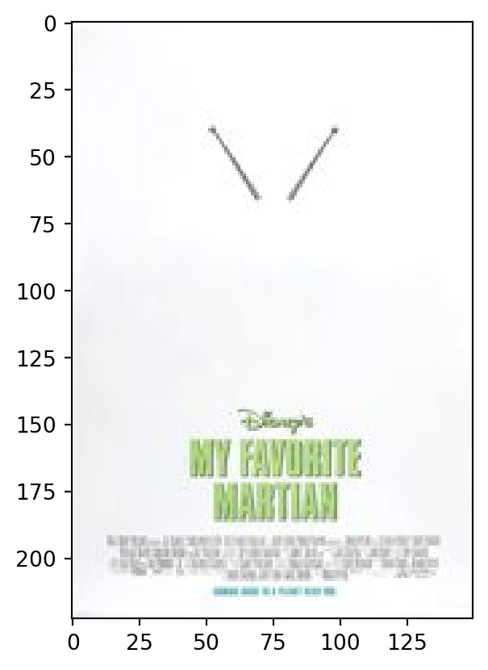
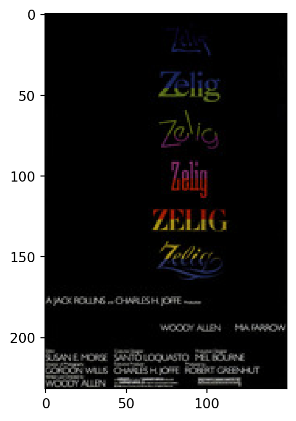
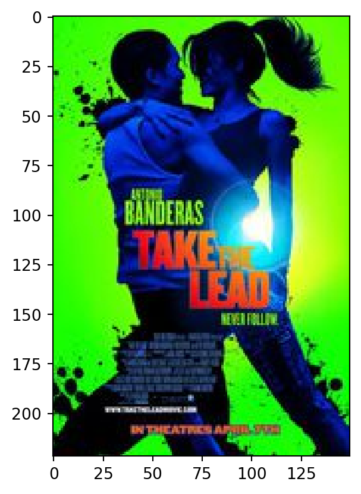
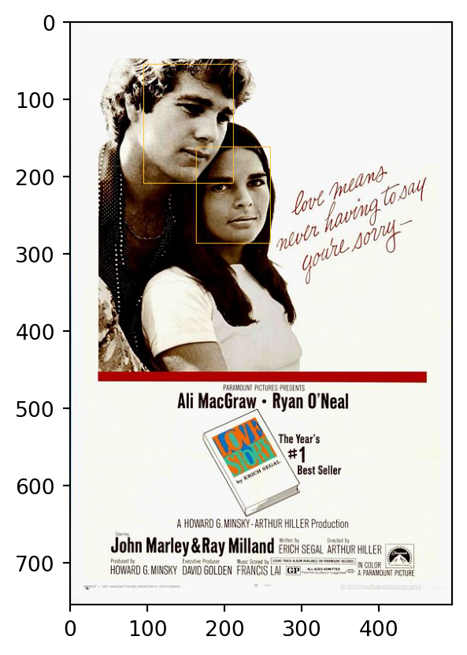

import numpy as np
import pandas as pd
import matplotlib.pyplot as plt
import dvt
import cv21.1 Tutorial I: Digital Images
This notebook provides an introduction to the methods presented in the book Distant Viewing: Computational Exploration of Digital Images (MIT Press, 2023). We replicate and extend portions of the analysis using a collection of 5000 movie posters presented in the the third chapter of the book. We do not assume any prior knowledge of Python or computer vision in these notes. While a complete introduction to Python is not in the scope of our introduction, we do our best to highlight the main features of the language as they apply to the application here. Here are the specific learning outcomes for the tutorial:
- Explain how digital images are stored as pixel arrays.
- Connect the structure of digital images with computational methods through the distant viewing framework.
- Apply pre-constructed Python code to study a collection of digital images.
- Explain measurements such as hue, saturation, chroma, and value using color theory.
- Compare movie poster composition through time and across genres.
- Produce annotations with state-of-the-art computer vision algorithms to detect faces using the distant viewing toolkit.
For further information about the distant viewing toolkit (dvt), the open-source Python package that we have developed, please see the project’s homepage. More information about the theory of distant viewing and the specific application to movie image posters can be the found in our book, which is available to download for free under an open access license on our website along with additional data and code to replicate the other studies shown in the text. A second notebook following up on the methods here using moving images can be found here.
Setup
In Google Colab, your working environment resets itself everytime you reopen a notebook. Therefore, all of the steps above need to be re-run each time that you start the notebook. If you were running this code on your own machine, the installation of the dvt package and downloading the data would only need to be done once. Loading the modules in the final code chunk, however, always needs to be run each time that Python is restarted.
Movie Poster Dataset
Before we jump into the analysis of the movie posters images, it is important to take a moment to look at the metadata that we have attached to each poster and to understand the structure of the dataset. In the code below, we use the read_csv function from the pandas module (which we have given the short name pd following standard Python conventions) to load the csv file that has one row for each movie in our dataset. We will save the output of the function as an object named posters. In the final line of the code, we write the object name all by itself, which causes the first file lines of the dataset to be printed inside of the notebook for us to look at. The data contains one row for each of the 100 top grossing films for each year from 1970 through 2019. For a few movies during the 1970s we were not able to find the movie posters; these are excluded from the dataset. For each movie, we have the year, the title, the file name of the associated image of the movie poster, and a description of the half decade that the movie comes from. The latter will be used in our analysis of change over time.
posters = pd.read_csv("data/movies_50_years_meta.csv")
posters| year | title | path | period | |
|---|---|---|---|---|
| 0 | 1970 | Love Story | thm/1970_love_story.jpg | 1970-1974 |
| 1 | 1970 | Airport | thm/1970_airport.jpg | 1970-1974 |
| 2 | 1970 | M.A.S.H. | thm/1970_mash.jpg | 1970-1974 |
| 3 | 1970 | Patton | thm/1970_patton.jpg | 1970-1974 |
| 4 | 1970 | Little Big Man | thm/1970_little_big_man.jpg | 1970-1974 |
| ... | ... | ... | ... | ... |
| 4675 | 2019 | The Art of Self-Defense | thm/2019_the_art_of_selfdefense.jpg | 2015-2019 |
| 4676 | 2019 | Luce | thm/2019_luce.jpg | 2015-2019 |
| 4677 | 2019 | The Other Side of Heaven 2: Fire of Faith | thm/2019_the_other_side_of_heaven__fire_of_fai... | 2015-2019 |
| 4678 | 2019 | The Aftermath | thm/2019_the_aftermath.jpg | 2015-2019 |
| 4679 | 2019 | The Kid | thm/2019_the_kid.jpg | 2015-2019 |
4680 rows × 4 columns
We have another set of metadata that associates each film with one or more genre categories. The dataset contains one row for each pair of film and genre tag. The year is included because there are several films that share the same title, but can be uniquely identified by knowing the title and year of the film.
genre = pd.read_csv("data/movies_50_years_tags.csv")
genre| year | title | genre | |
|---|---|---|---|
| 0 | 1970 | Love Story | Drama |
| 1 | 1970 | Love Story | Romance |
| 2 | 1970 | Airport | Action |
| 3 | 1970 | Airport | Drama |
| 4 | 1970 | Airport | Thriller |
| ... | ... | ... | ... |
| 11309 | 2019 | The Other Side of Heaven 2: Fire of Faith | Drama |
| 11310 | 2019 | The Aftermath | Drama |
| 11311 | 2019 | The Aftermath | Romance |
| 11312 | 2019 | The Kid | Biography |
| 11313 | 2019 | The Kid | Drama |
11314 rows × 3 columns
Looking at the first and last few rows, do the genre tags seem reasonable for the given films? Our analyses in the remainder of the notebook will focus on movie poster patterns across time periods and genres.
Now that we have a sense of our data, what kinds of questions might we be interesed in exploring?
Digital Images
Now that we have seen the metadata for the movie posters, let’s look at how digital images are manipulated in Python by loading in the image from a single movie poster. All of the movie posters are stored as JPEG files (an abbreviation for the Joint Photographic Experts Group). This is a common image format that can be opened and understood by nearly any program or device that works with images. If you opened a JPEG file on your computer or phone, it would display the image without any special setup required. Many of the images that you see on public websites are stored as JPEG files and are processed and displayed by your browser.
In the code below, we use the function dvt.load_image to load an image into Python. We save the image as an object named img. The path to the poster image is taken directly from the metadata above. Here, we are using the formula of taking the name of the dataset (posters) followed by a period and the name of the column (path) followed by the row number in square brackets ([10]). We have selected the poster from the John Wayne film The Legend because it has a distinct orange tone that will be interesting to look at. After loading the image into Python, we print out the image object in the second line by including it on it’s own final line.
img = dvt.load_image("data/" + posters.path[10])
plt.imshow(img)
We see that it’s relatively easy to load a common image file format into Python and then to display it within the notebook. In order to best understand the computational analyses that follow, it will be helpful to investigate the the way that digital image is represented inside of Python. We can use the built-in Python function type to see the obect type of any Python object. Let’s do that below:
type(img)numpy.ndarrayYou may have reasonably assumed that the object would have a name related to the fact that it contains an image. But, we see that it is cryptically called a numpy.ndarray. What does this mean? This is a generic data type created by the numpy library (the same one that we loaded above in the setup section) to store rectangular blocks of numbers.
To understand how an array of numbers can represent an image, we will print out the object’s shape attribute (an attribute is a characteristic of a Python object that we can access with the object name followed by a . and the attribute name). This tells us how the numbers in array are arranged.
img.shape(229, 150, 3)We see that the shape of the object has three components. The first number tells us how many rows of numbers there are and the second tells us how many columns there are. The third number indicates that there is a third dimension with a size of three. The easiest way to picture this is to think of having three sets of rectangular grids of numbers, each with 229 rows and 150 numbers. Think of an Excel file with three sheets, each having a grid of numbers of the same size.
A specific row and column in this grid of numbers represents a pixel (picture + element), the smallest individal component of an image. We need three different numbers for each pixel to indicate the amount of red, green, and blue light that is needed to combine to create the color at each particular location. The Python library that we are using here represents the quantity of light on a scale from 0 (not turned on at all) through 255 (as bright as possible). Blending these three components together can recreate nearly any color observable by the human eye.
To make this more concrete, let’s see an example of the numbers that create the image above. There are far too many to look at all at once. Instead, we will use a bracket notation to select the first ten rows, first eight columns, and the first color component. Python uses a convention that is common in computer programing that starts counting at zero, so the 0 below grabs from the first array of numbers, which here correspond to the red color intensity.
img[:10, :8, 0]array([[202, 206, 205, 204, 208, 207, 204, 208],
[208, 206, 206, 206, 205, 206, 207, 206],
[204, 204, 210, 208, 197, 197, 206, 209],
[207, 204, 208, 207, 200, 202, 208, 208],
[209, 206, 205, 206, 207, 208, 209, 206],
[204, 206, 207, 206, 206, 205, 205, 207],
[206, 206, 206, 206, 208, 207, 207, 207],
[206, 204, 205, 206, 206, 207, 208, 206],
[206, 206, 206, 206, 206, 206, 207, 208],
[206, 206, 206, 206, 206, 207, 207, 208]], dtype=uint8)The portion of the image that we grabbed above is the far upper left-hand corner. We see that to represent this corner we need to turn on a lot of red light (around 200ish out a possible 255). However, if we look at the image there appear to be no color red anywhere. The upper left-hand corner appears to be white. To understand how this is the case, let’s look at the second component, which is the amount of green light.
img[:10, :8, 1]array([[202, 206, 205, 204, 208, 207, 204, 208],
[208, 206, 206, 206, 205, 206, 207, 206],
[204, 204, 210, 208, 197, 197, 206, 209],
[207, 204, 208, 207, 200, 202, 208, 208],
[209, 206, 205, 206, 207, 208, 209, 206],
[204, 206, 207, 206, 206, 205, 205, 207],
[206, 206, 206, 206, 208, 207, 207, 207],
[206, 204, 205, 206, 206, 207, 208, 206],
[206, 206, 206, 206, 206, 206, 207, 208],
[206, 206, 206, 206, 206, 207, 207, 208]], dtype=uint8)And while we are at it, also the amount of blue light.
img[:10, :8, 2]array([[202, 206, 205, 204, 208, 207, 204, 208],
[208, 206, 206, 206, 205, 206, 207, 206],
[206, 206, 212, 210, 199, 199, 208, 211],
[209, 206, 210, 209, 202, 204, 210, 210],
[211, 208, 207, 208, 209, 210, 211, 208],
[206, 208, 209, 208, 208, 207, 207, 209],
[208, 208, 208, 208, 210, 209, 209, 209],
[208, 206, 207, 208, 208, 209, 210, 208],
[208, 208, 208, 208, 208, 208, 209, 210],
[208, 208, 208, 208, 208, 209, 209, 210]], dtype=uint8)Looking above, we see that the red, green, and blue lights are all turned on at the same level in the upper left-hand corner of the image. When we blend light from all three colors together, we get a shade of grey. This is something closer to black when the colors are all turned low, and something closer to white when the colors are all turned higher. So now this approximates what we see in the upper left corner of the image, corresponding to a shade of grey that is very close to white.
To solidify our understanding how these components work, let’s see another part of the image corresponding to rows 180-190 and columns 25-30. It’s very small, but by looking closely we should be able to connect it to the image above. The resulting image is too small for Colab to automatically treat as an image for display purposes, so we need to use the plt.imshow function to display the pixel values as pixels.
plt.imshow(img[180:190, 25:30, :])
This small window of the image is part of the orange at the bottom of the movie poster. Let’s see the red, green, and blue components that make up this color.
img[180, 25, :]array([189, 106, 0], dtype=uint8)The dark orange color comes from blending a good amount of red light (189/255), a bit of green (106/255), and no blue (0/255) together. Looking at a color wheel should help explain why orange comes from mixing a bit of green with a larger bit of red.
Different image processing libraries have slightly different conventions for how to represent digital images. Most use the same ordering of the colors (red, green, blue), and some use fractions between 0 and 1 rather than integers between 0 and 255. Certain image formats include a fourth component, called an alpha channel, to represent image opacity. Other formats contain a single color channel to represent grayscale images. However, all of these formats have the same underlying concept of representing digital images through numbers that indicate pixel intensities. This is a very different way of thinking about images than the way that humans process visual signals and is something that we will explore in the next section.
Now we know we can look closely at color within the posters, which we can combine with the metadata. What are additional questions that we can ask about movie posters?
Distant Viewing: Theory
Computers represent images by understanding them as three-dimensional arrays of numbers. This is very different from the way that images are interpreted and used by human viewers. Furthermore, the connection between these two representations is not at all obvious. There is no way to understand what is being represented by a small subset of pixel intensities without seeing a large part of the image as a whole. Even something as simple as the amount of blue light in a given pixel can be difficult to understand. A lot of blue could be the color blue, or could just be blended with red and green to make white. So, in order to do computational analyses with large collections of digital images, we first need to convert these raw pixel intensities into representations that match the interpretations of the images that we are interested in studying.
The theory behind distant viewing stems from this exact realization. Namely, that the way digital images are represented forces us to construct annotations that hold structured data that aligns with our research questions. These annotations, which can be created manually or using computational algorithms, are both destructive (there is information lost in the process of creating them) and open to interpretation (there is never a neutral way of creating annotations; decisions always need to be made about how they are created).
We will work towards more complex annotations, but let’s start with one of the most straightforward: image brightness. Pixel intensities tell us how much to turn on the red, green, and blue lights at each postion of the image to create a display of a given image. The higher these numbers are, it stands to reason, the brighter the image will be when shown on a digital display. So, one way to represent a meaningful annotation about an image is to take the average value of all pixel intensities. We can do this with the following code, which uses the numpy function mean to compute the average (mean) of all the values in an array.
np.mean(img)np.float64(93.82433770014556)Little argument probably needs to be made to convince someone that a lot of information is lost between this one number and all of the rich information that is present in the thumbnail image of the movie poster. There is no information about the content of the text in the image, the dominant orange color, the shape of the man and the horse, the white border, or the way each of these elements is arranged in the frame. So, clearly this process of creating annotations is a destructive one. The difference between the summarized annotation (a single number) and the information in the original image is known in information theory as a semantic gap. But what about the second part of the theory, that this measurement is non-netural and represents specific choices about how we want to view at a distance? While this may seem less obvious, there are many different ways of measuring the brightness of an image. For example, we might want to consider the median value of the pixel intensities rather than their average value as in the code below.
np.median(img)np.float64(75.0)Alternatively, because the human eye is more sensitive to green than blue or red light, we might want to weight the brightness more heavily based on the color of light that is being used. Many movie posters have black or white borders, which could heavily influence the brightness of the image as a whole. Perhaps we would want to only take the brightness at the middle part of the image. And of course, why do we even care about the brightness of the image in the first place? Once we start thinking about all of these different options, it should become clear that there is no perfect way to represent any element of an image as structured data. Choices and tradeoffs are always being made. Eventually we need to make some of those choices and see what we can learn with them, while keeping the caveats about the nature of image annotations and the resulting semantic gaps always in the back of our mind. In other words, when we are analyzing images through computer vision, we are distant viewing.
Annotating Image Brightness
We have now carefully worked through the way the digital images are stored, understood the implication for this in terms of the theory of distant viewing, and shown one particular way of constructing an annotation through image brightness. Let’s now put this together to do an analysis of the movie posters based on their overall brightness. As a first step, we need to repeat the process used with the one poster above to all of the images in the dataset. In order to do this we use a loop in Python. This consists of the keyword for, followed by a block of indented code. Each of the lines of the indented code will be run once for every value of the iteration variable ind from the set of row numbers in the posters dataset. So, we will load the image of each poster into Python, compute the image brightness, and the save the brightness in a new column that we created in the dataset. To match the results in the book as closely as possible, we will divide the brightness by 255 so that the values range from 0 (completely black) to 1 (completely white).
posters['avg_brightness'] = 0.0
for ind in posters.index:
img = dvt.load_image("data/" + posters.loc[ind, 'path'])
posters.loc[ind, 'avg_brightness'] = np.mean(img) / 255Now that we have added the annotation of the image brightness to each of the rows of the poster data, we can arrange the posters from the brightest to the darkest using the sort_values method.
posters = posters.sort_values('avg_brightness', ascending=False)
posters| year | title | path | period | avg_brightness | |
|---|---|---|---|---|---|
| 3634 | 1999 | My Favorite Martian | thm/1999_my_favorite_martian.jpg | 1995-1999 | 0.959253 |
| 4475 | 2015 | Steve Jobs | thm/2015_steve_jobs.jpg | 2015-2019 | 0.957483 |
| 4569 | 2017 | Downsizing | thm/2017_downsizing.jpg | 2015-2019 | 0.957002 |
| 2465 | 1972 | Instant Replay (In Situ Installation) | thm/1972_instant_replay_in_situ_installation.jpg | 1970-1974 | 0.953151 |
| 4140 | 2009 | Precious | thm/2009_precious.jpg | 2005-2009 | 0.949430 |
| ... | ... | ... | ... | ... | ... |
| 4194 | 2010 | Predators | thm/2010_predators.jpg | 2010-2014 | 0.036327 |
| 3406 | 1994 | Wes Craven's New Nightmare | thm/1994_wes_cravens_new_nightmare.jpg | 1990-1994 | 0.034680 |
| 3287 | 1992 | Consenting Adults | thm/1992_consenting_adults.jpg | 1990-1994 | 0.034447 |
| 1723 | 2006 | Saw III | thm/2006_saw_iii.jpg | 2005-2009 | 0.033579 |
| 592 | 1983 | Zelig | thm/1983_zelig.jpg | 1980-1984 | 0.030483 |
4680 rows × 5 columns
The theory of distant viewing tells us that the creation of annotations, while a necessary step in computational analysis of images, is both destructive and subjective. So, before continuing to an aggregative analysis, it is useful to connect the annotations back to the images by actually looking at some of the posters. One way to do that is to look at posters with extreme values. In the code below we load the first image in the sorted dataset, which is the poster that has been assigned the highest brightness value. Remember that Python starts counting at zero. The zero in the first line corresponds to the first row of the data.
Feel free to look at other particularly bright rows to get a fuller picture of what is being captured by the annotation.
img = dvt.load_image("data/" + posters.iloc[0].path)
plt.imshow(img)
It’s similarly useful to look at the darkest images in the dataset. To do that we modify the code to start at the number of rows in the data minus one (again, because of Python’s convention of starting to count at zero). You can change the minus 1 to minus n to look at the n’th least bright image in the data.
img = dvt.load_image("data/" + posters.iloc[posters.shape[0] - 1].path)
plt.imshow(img)
After looking at some example posters, how do you feel about the annotation’s ability to capture poster brightness? At least at the extremes, what feature(s) of the poster seem to best explain/predict the brightness of the image?
Now that we have some understanding of how the annotation works, and hopefully some confidence that it corresponds with some meaningful quantity, let’s do some aggregative analysis with the annotations. In the code below we group out dataset by period (half-decades from 1970 through 2019) and look at the mean average brightness of all posters from that period.
posters.groupby(['period'])['avg_brightness'].mean()period
1970-1974 0.575523
1975-1979 0.525609
1980-1984 0.471467
1985-1989 0.443442
1990-1994 0.408656
1995-1999 0.373039
2000-2004 0.417602
2005-2009 0.434809
2010-2014 0.393544
2015-2019 0.409779
Name: avg_brightness, dtype: float64How would you characterize the pattern here? Is there a meaningful pattern? If so, do you have any hypotheses about what might be behind them?
Let’s do a similar analysis using the genres associated with each film. To do this, we first use the function pd.merge to combine our posters data with the genres table.
df = pd.merge(posters, genre, on=['year', 'title'])
df| year | title | path | period | avg_brightness | genre | |
|---|---|---|---|---|---|---|
| 0 | 1999 | My Favorite Martian | thm/1999_my_favorite_martian.jpg | 1995-1999 | 0.959253 | Comedy |
| 1 | 1999 | My Favorite Martian | thm/1999_my_favorite_martian.jpg | 1995-1999 | 0.959253 | Family |
| 2 | 1999 | My Favorite Martian | thm/1999_my_favorite_martian.jpg | 1995-1999 | 0.959253 | Sci-Fi |
| 3 | 2015 | Steve Jobs | thm/2015_steve_jobs.jpg | 2015-2019 | 0.957483 | Biography |
| 4 | 2015 | Steve Jobs | thm/2015_steve_jobs.jpg | 2015-2019 | 0.957483 | Drama |
| ... | ... | ... | ... | ... | ... | ... |
| 11075 | 1992 | Consenting Adults | thm/1992_consenting_adults.jpg | 1990-1994 | 0.034447 | Mystery |
| 11076 | 2006 | Saw III | thm/2006_saw_iii.jpg | 2005-2009 | 0.033579 | Horror |
| 11077 | 2006 | Saw III | thm/2006_saw_iii.jpg | 2005-2009 | 0.033579 | Mystery |
| 11078 | 2006 | Saw III | thm/2006_saw_iii.jpg | 2005-2009 | 0.033579 | Thriller |
| 11079 | 1983 | Zelig | thm/1983_zelig.jpg | 1980-1984 | 0.030483 | Comedy |
11080 rows × 6 columns
Then, we can repeate the analysis from the period data by grouping on genre and then taking the average brightness of each genre. Whereas it made sense to arrange the periods in chronological order to see a pattern, here it will be better to have Python arrange the genres by their mean average brightness. We do this with the sort_values method on the summarized data.
df.groupby(['genre'])['avg_brightness'].mean().sort_values()genre
Horror 0.293290
Mystery 0.309600
Thriller 0.333107
Sci-Fi 0.335817
Action 0.368364
Fantasy 0.396500
Crime 0.406723
Adventure 0.411667
Biography 0.433424
Drama 0.437968
Animation 0.468851
Family 0.489931
Romance 0.521365
Comedy 0.521993
Name: avg_brightness, dtype: float64What patterns do you notice in the genre codes here? Which seem to have the darkest posters and which seem to have the brightness ones? Can you summarize this pattern in any way? Any hypotheses about what is going on here?
Saturation and Chroma
We have already seen that if we do a careful analysis, we can do quite a bit of work with a relatively straightforward annotation based on image brightness. Our goal though is to understand the use of color more broadly in movie posters, which will require creating additional annotations that capture other aspects of poster color. One way to do this is to first convert the raw pixel intensities into an alternative color space.
The RGB representation of pixels by the amount of red, green, and blue light needed to create the color at a specific point in space comes from the low-level engineering needs to image capture and display. As we have already seen, it is not a particularly meaningful way to think about our perception of color. Fortunately, there are other ways to represent color that more closely align with human perception and understanding. In order to understand how this works, let’s re-load the poster of the John Wayne movie The Legend.
img = dvt.load_image("data/" + posters.path[10])
plt.imshow(img)
Recall that above we located a specific pixel that corresponds to the burnt orange color in the poster. It has a RGB representation of the following:
img[180, 25, :]array([189, 106, 0], dtype=uint8)We can convert the RGB format into an HSV format using the cvt2.cvtColor function by specifying the type of color space transformation (COLOR_RGB2HSV) to use as a second argument. We will do some conversion of the scales of the output to convert them into a scale from 0 to 1, which will better match other sources as well as the longer discussion of this case study in Chapter 3 of Distant Viewing.
img_hsv = cv2.cvtColor(img, cv2.COLOR_RGB2HSV)
img_hsv = img_hsv.astype(np.float64)
img_hsv[:, :, 0] = img_hsv[:, :, 0] / 179.0
img_hsv[:, :, 1] = img_hsv[:, :, 1] / 255.0
img_hsv[:, :, 2] = img_hsv[:, :, 2] / 255.0
img_hsv.shape(229, 150, 3)Notice that the shape of the output is exactly the same as the original image. The rows and columns still correspond to the same locations as the RGB model; it is only the triple of numbers at that location that have changed. Let’s see what our burnt orange pixel looks like now:
img_hsv[180, 25, :]array([0.09497207, 1. , 0.74117647])The first component is around 0.095. This correspond to the hue of the pixel, with this number corresponding to the color orange. Hue is a bit complex and we will further investigate how it works in the next section. The second number is the saturation, which represents how rich the color is. A light pastel, such as a pale pink, will have a low saturation. Here, we see that the saturation is the maximum value of 1. Finally, the value is an alternative representation of brightness, which here we see is equal to 0.74.
Let’s now focus on the saturation of the posters and do a similar analysis to the ones above with brightness. To more closely follow the analysis in the book, we will compute the related quantity called chroma instead of working with saturation directly. This can be computed by multiplying the saturation by the value. We used this quantity because it more closely aligns with the idea of the richness of color that we wanted to capture. For example, we see that the burnt orange color in our poster for The Legend has a saturation of 1, but it’s chroma is only 0.74 (saturation times value). Only a “pure” orange color, like what you would see on a color wheel, would have a chroma of 1.
Now, let’s cycle through the posters and add the average chroma value to each of them just as we did with the image brightness.
posters['avg_chroma'] = 0.0
for ind in posters.index:
img = dvt.load_image("data/" + posters.loc[ind, 'path'])
img_hsv = cv2.cvtColor(img, cv2.COLOR_RGB2HSV)
img_hsv = img_hsv.astype(np.float64)
img_hsv[:, :, 0] = img_hsv[:, :, 0] / 179.0
img_hsv[:, :, 1] = img_hsv[:, :, 1] / 255.0
img_hsv[:, :, 2] = img_hsv[:, :, 2] / 255.0
posters.loc[ind, 'avg_chroma'] = np.mean(img_hsv[:, :, 1] * img_hsv[:, :, 2])And again we will arrange the posters data from the most to the least highest levels of chroma.
posters = posters.sort_values('avg_chroma', ascending=False)
posters| year | title | path | period | avg_brightness | avg_chroma | |
|---|---|---|---|---|---|---|
| 3987 | 2006 | The Omen | thm/2006_the_omen.jpg | 2005-2009 | 0.329209 | 0.956298 |
| 4061 | 2007 | Daddy's Little Girls | thm/2007_daddys_little_girls.jpg | 2005-2009 | 0.558258 | 0.931692 |
| 409 | 1980 | The Shining | thm/1980_the_shining.jpg | 1980-1984 | 0.550869 | 0.797270 |
| 4556 | 2017 | How to Be a Latin Lover | thm/2017_how_to_be_a_latin_lover.jpg | 2015-2019 | 0.480406 | 0.768021 |
| 3981 | 2006 | Curious George | thm/2006_curious_george.jpg | 2005-2009 | 0.534758 | 0.759104 |
| ... | ... | ... | ... | ... | ... | ... |
| 2502 | 1973 | Psyched by the 4D Witch (A Tale of Demonology) | thm/1973_psyched_by_the_d_witch_a_tale_of_demo... | 1970-1974 | 0.760277 | 0.000000 |
| 2637 | 1978 | The Adventures of the Jensen Boys | thm/1978_the_adventures_of_the_jensen_boys.jpg | 1975-1979 | 0.282204 | 0.000000 |
| 2473 | 1972 | Peed Into the Wind | thm/1972_peed_into_the_wind.jpg | 1970-1974 | 0.594636 | 0.000000 |
| 131 | 1973 | Never Look Back | thm/1973_never_look_back.jpg | 1970-1974 | 0.661440 | 0.000000 |
| 2485 | 1972 | The Only Way Home | thm/1972_the_only_way_home.jpg | 1970-1974 | 0.694055 | 0.000000 |
4680 rows × 6 columns
Now, let’s once again look at some of the posters that correspond to extreme values. It is always an important step when working with new annotations to go back to the original images, and actually look at them to see how the numeric representation of the image corresponds to our own viewing and interpretation. As before, please feel free to experiment by looking at other posters with particularly high values.
img = dvt.load_image("data/" + posters.iloc[0].path)
plt.imshow(img)
We can also do this with posters have the lowest average chroma. Many posters have an average chroma equal to zero. Can you think of what feature these all share in common before looking at the examples?
img = dvt.load_image("data/" + posters.iloc[posters.shape[0] - 1].path)
plt.imshow(img)
Let’s see how the average chroma corresponds to the genres associated with each of the movie posters. Because there is such a shift in brightness from first twenty years of the data (a lot was in black and white), we will filter the data after merging in the genres to only include years from 1990 onwards.
df = pd.merge(posters, genre, on=['year', 'title'])
df = df[df["year"] >= 1990]
df.groupby(['genre'])['avg_chroma'].mean().sort_values()genre
Mystery 0.115066
Horror 0.117193
Thriller 0.134544
Biography 0.136763
Sci-Fi 0.152587
Crime 0.153525
Drama 0.154572
Action 0.164537
Romance 0.168240
Fantasy 0.170068
Comedy 0.199362
Family 0.199996
Adventure 0.204303
Animation 0.275066
Name: avg_chroma, dtype: float64Take some time to look at the results. What patterns do you notice here? Does anything seem either (i) particularly surprising or (ii) particularly unsurprising? Both of these are useful observations for understanding the connection between the messages conveyed through the poster’s color and the associated genres.
Dominant Color
Having looked at the brightness/value and saturation/chroma of the posters, we now look to the third element of color, know as hue. To get started, let’s take a different example poster. Here, we will load the poster from the movie Take the Lead (2006), which has several different hues of color in it.
img = dvt.load_image("data/" + posters.path[4016])
plt.imshow(img)
Now, let’s compute the HSV coordinates of this image just as we did in the previous section. Additionally, we will reshape the pixel data so that the array has one row for each pixel and only three columns. This is just some re-arranging to make the rest of the code easier to write and understand.
img_hsv = cv2.cvtColor(img, cv2.COLOR_RGB2HSV)
img_hsv = img_hsv.astype(np.float64)
img_hsv[:, :, 0] = img_hsv[:, :, 0] / 179.0
img_hsv[:, :, 1] = img_hsv[:, :, 1] / 255.0
img_hsv[:, :, 2] = img_hsv[:, :, 2] / 255.0
img_hsv = img_hsv.reshape((-1, 3), order = "F")
img_hsv.shape(33300, 3)The hue is a number between 0 and 1 that indicate what we would colloqually call “color”. Unlike brightness, saturation, chroma, and value, these numbers are best thought of being arranged in a circle (see the associated slides for a visualization). A value of 0 corresponds with red, .33 with green, .5 with cyan, and .66 with blue. Values close to 1 wrap back through purple and link back into red. So, the hues 0.01 and 0.99 are actually quite similar.
To understand a bit better, let’s look at a histogram showing the distribution of the hues in the image. We need to be careful, though, because our interpretation of hue is only applicable when the chroma is sufficently large. If the chroma value is small, there is little color to show anyway and the differences between hues may be difficult or impossible to differentate. In the code below, we should the distribution of hues with a chroma above 0.3.
plt.hist(img_hsv[img_hsv[:,1] * img_hsv[:,2] > 0.3, 0], bins=100)
plt.show()
We should see a lot of values near 0.3; these correspond to the green in the poster, which takes up a lot of space in the image. The peak near 0.66 is associated with the blue in the image, mainly on the silhouettes of the two characters on the poster. The smaller amount near one, and also wrapping around at 1, is the orange/red color in the title of the movie.
Taking averages of hues does not in general provide meaningful summaries. For an extreme example, if we take the average of two shades of red that have hues of 0.99 and 0.01, this would yield a hue of 0.5, cyan, a color directly between green and blue. Alternatively, we can create an annotation of hue by breaking the range of hues up into standard color names and then count the proportion of each poster that corresponds with each color. To do this, we will load another dataset that we created with common cut-off values for each of the hues.
hue = pd.read_csv("data/movies_50_years_hue.csv")
hue| cnom | start | end | mid | |
|---|---|---|---|---|
| 0 | red | 0.000000 | 0.015625 | 0.007812 |
| 1 | orange | 0.015625 | 0.109375 | 0.062500 |
| 2 | yellow | 0.109375 | 0.203125 | 0.156250 |
| 3 | green | 0.203125 | 0.453125 | 0.328125 |
| 4 | cyan | 0.453125 | 0.546875 | 0.500000 |
| 5 | blue | 0.546875 | 0.765625 | 0.656250 |
| 6 | violet | 0.765625 | 0.953125 | 0.859375 |
| 7 | red | 0.953125 | 1.000000 | 0.976562 |
Next, we take the hues in img_hsv and count the numbes of pixels that are in each of these buckets after filtering for a sufficently high chroma to have a meaningful hue.
bins = np.append(0, hue.end.values)
cnt, _ = np.histogram(img_hsv[(img_hsv[:,1] * img_hsv[:,2] > 0.3), 0], bins = bins)
cnt[0] = cnt[0] + cnt[7]
cnt = cnt[:7]
cntarray([ 443, 764, 443, 14040, 692, 4974, 71])There are a number of different ways to summarize these counts. We will create two annotations from them. First, we associate each poster with a dominant color corresponding to the hue name that is most strongly represented in the poster. This can be done with the following code. As we see, the code associates the Take the Lead poster with the color green as would be have expected from the histogram.
hue.cnom.values[np.argmax(cnt)]'green'The other helpful quantity that we will save is the proportion of the entire poster that corresponds to this most dominant color. Using the code below, we see that that over 42% of this poster corresponds to hues which we have categorized as “green”.
color_percent = np.max(cnt) / img_hsv.shape[0] * 100
color_percentnp.float64(42.16216216216216)Now that we have seen how to do this with a single image, let’s cycle through all of the posters and compute the name of the dominant color and the percentage of the poster corresponding to each color for each of the posters.
posters['dom_color'] = ''
posters['dom_color_percent'] = 0.0
for ind in posters.index:
img = dvt.load_image("data/" + posters.loc[ind, 'path'])
img_hsv = cv2.cvtColor(img, cv2.COLOR_RGB2HSV)
img_hsv = img_hsv.astype(np.float64)
img_hsv[:, :, 0] = img_hsv[:, :, 0] / 179.0
img_hsv[:, :, 1] = img_hsv[:, :, 1] / 255.0
img_hsv[:, :, 2] = img_hsv[:, :, 2] / 255.0
img_hsv = img_hsv.reshape((-1, 3), order = "F")
bins = np.append(0, hue.end.values)
cnt, _ = np.histogram(img_hsv[(img_hsv[:,1] * img_hsv[:,2] > 0.3), 0], bins = bins)
cnt[0] = cnt[0] + cnt[7]
cnt = cnt[:7]
posters.loc[ind, 'dom_color'] = hue.cnom.values[np.argmax(cnt)]
posters.loc[ind, 'dom_color_percent'] = color_percent = np.max(cnt) / img_hsv.shape[0] * 100As with the other two annotations, we can start by looking at the the posters the have the most amount of dominant color for each given hue. Here, for example is the code to show the image with the largest amount of blue. Try to change the code to see other colors such as “red”, “yellow”, and “green”.
img = dvt.load_image("data/" + posters[posters.dom_color == "blue"].sort_values(
'dom_color', ascending=False
).iloc[0].path)
plt.imshow(img)
Now, let’s do some analysis with these annotations. We will join the genre data back into the annotations and, as before, filter to only films from 1990 onwards. We will also only consider posters that have at least 5% of whatever the selected dominant color is.
df = pd.merge(posters, genre, on=['year', 'title'])
df = df[df["year"] >= 1990]
df = df[df['dom_color_percent'] > 5]
df| year | title | path | period | avg_brightness | avg_chroma | dom_color | dom_color_percent | genre | |
|---|---|---|---|---|---|---|---|---|---|
| 0 | 2006 | The Omen | thm/2006_the_omen.jpg | 2005-2009 | 0.329209 | 0.956298 | red | 98.228228 | Horror |
| 1 | 2006 | The Omen | thm/2006_the_omen.jpg | 2005-2009 | 0.329209 | 0.956298 | red | 98.228228 | Thriller |
| 2 | 2007 | Daddy's Little Girls | thm/2007_daddys_little_girls.jpg | 2005-2009 | 0.558258 | 0.931692 | yellow | 93.696697 | Drama |
| 3 | 2007 | Daddy's Little Girls | thm/2007_daddys_little_girls.jpg | 2005-2009 | 0.558258 | 0.931692 | yellow | 93.696697 | Romance |
| 6 | 2017 | How to Be a Latin Lover | thm/2017_how_to_be_a_latin_lover.jpg | 2015-2019 | 0.480406 | 0.768021 | yellow | 63.965368 | Comedy |
| ... | ... | ... | ... | ... | ... | ... | ... | ... | ... |
| 9928 | 2008 | Valkyrie | thm/2008_valkyrie.jpg | 2005-2009 | 0.627815 | 0.045591 | red | 6.334752 | Drama |
| 9929 | 2008 | Valkyrie | thm/2008_valkyrie.jpg | 2005-2009 | 0.627815 | 0.045591 | red | 6.334752 | Thriller |
| 10068 | 2002 | Catch Me If You Can | thm/2002_catch_me_if_you_can.jpg | 2000-2004 | 0.763134 | 0.041342 | blue | 5.009009 | Biography |
| 10069 | 2002 | Catch Me If You Can | thm/2002_catch_me_if_you_can.jpg | 2000-2004 | 0.763134 | 0.041342 | blue | 5.009009 | Crime |
| 10070 | 2002 | Catch Me If You Can | thm/2002_catch_me_if_you_can.jpg | 2000-2004 | 0.763134 | 0.041342 | blue | 5.009009 | Drama |
5086 rows × 9 columns
Now, we can compute the proportion of posters from each genre that have red as a dominant color using the code below.
df['percent_color'] = (df['dom_color'] == "red")
df.groupby(['genre'])['percent_color'].mean().sort_values()genre
Animation 0.061905
Adventure 0.076106
Biography 0.076923
Romance 0.100543
Fantasy 0.101604
Comedy 0.117041
Sci-Fi 0.134615
Drama 0.134901
Family 0.145228
Action 0.169643
Mystery 0.180328
Crime 0.190202
Thriller 0.223529
Horror 0.264463
Name: percent_color, dtype: float64Do you see any interesting patterns in the data above? After looking closely, try to change the color of interest and see if any other patterns arise.
Face Detection
When introducing the ideas behind distant viewing and the computational analysis of large collections of digital images, we like to start with annotations that capture color. There’s a tangible connection between elements such as brightness, saturation, and hue that we can instantly connect to the way that digital images are created and stored. At the same time, color is not at all simple. In many ways, it is a particularly difficult annotation to work with because there are so many different ways to count, bucket, and summarize the results. Understanding the connection between the raw pixel intensites, the resulting annoations, and the semantic gap between the two is key to understanding the challenges and possibilites of working with collections of digital images, and distant viewing.
Of course, many applications of distant viewing will want to integrate other kinds of annotations, many of which require using more advanced machine learning techniques such as neural networks and large language models. In this final section of analysis, we will show how to use a face detection model to add an additional annotation to our movie posters dataset using the distant viewing toolkit (dvt).
The distant viewing toolkit simplifes the process of applying several common computer visional algorithms to still and moving images. Most of the difficult work of standardizing the inputs, downloading models, and getting all of the results into the same format is taken care of in dvt. All that we need to do is load the annotator that we are interested in, load the images of interest, and create the annotations by calling a specific method from each annotator. To start, we will use the code below to load and save a AnnoFaces object for detecting faces in images. The first time this function is called, Python will download the underlying model that does this processing.
Why might we be interested in detecting faces in movie posters? Which questions could we ask?
anno_face = dvt.AnnoFaces()/Users/admin/gh/dvscripts/env/lib/python3.12/site-packages/dvt/face.py:38: FutureWarning: You are using `torch.load` with `weights_only=False` (the current default value), which uses the default pickle module implicitly. It is possible to construct malicious pickle data which will execute arbitrary code during unpickling (See https://github.com/pytorch/pytorch/blob/main/SECURITY.md#untrusted-models for more details). In a future release, the default value for `weights_only` will be flipped to `True`. This limits the functions that could be executed during unpickling. Arbitrary objects will no longer be allowed to be loaded via this mode unless they are explicitly allowlisted by the user via `torch.serialization.add_safe_globals`. We recommend you start setting `weights_only=True` for any use case where you don't have full control of the loaded file. Please open an issue on GitHub for any issues related to this experimental feature.
self.mtcnn.load_state_dict(torch.load(model_path_mtcnn))
/Users/admin/gh/dvscripts/env/lib/python3.12/site-packages/dvt/face.py:42: FutureWarning: You are using `torch.load` with `weights_only=False` (the current default value), which uses the default pickle module implicitly. It is possible to construct malicious pickle data which will execute arbitrary code during unpickling (See https://github.com/pytorch/pytorch/blob/main/SECURITY.md#untrusted-models for more details). In a future release, the default value for `weights_only` will be flipped to `True`. This limits the functions that could be executed during unpickling. Arbitrary objects will no longer be allowed to be loaded via this mode unless they are explicitly allowlisted by the user via `torch.serialization.add_safe_globals`. We recommend you start setting `weights_only=True` for any use case where you don't have full control of the loaded file. Please open an issue on GitHub for any issues related to this experimental feature.
self.vggface.load_state_dict(torch.load(model_path_vggface))In order to get good results from face detection, unlike the color analysis, we need to work with the full resolution version of the movie posters. We downloaded a full-size image for this purpose from the movie Love Story, the top-grossing film from 1970. Let’s read this image into Python using the function load_image. We can display this in the Colab notebook, noting that it is much larger and sharper than the thumbnails we were using previously.
img = dvt.load_image('data/love_story.jpg')
plt.imshow(img)In order to run the face detection annotator on the image, we use the run method of the annotator and provide the image that we have loaded as an argument to the function.
out_face = anno_face.run(img, visualize=True)The output of the annotation contains two objects. The first is the original image with boxes around the detected faces. This is useful for the qualatitive analysis and assessment of how well the algorithm works on our data. We see in this example that the algorithm has found the two faces present in the poster.
plt.imshow(out_face['img'])
A structured data version of the detected faces is provided in the object named boxes. It can be turned into a data frame with the pd.DataFrame function. Here, we see that it tells us the pixel coordinates (from the upper-left hand corner) of the detected faces along with a probability score, which tells us how confident the prediction is that there is actually a face in the given location.
pd.DataFrame(out_face['boxes'])| face_id | x | xend | y | yend | prob | |
|---|---|---|---|---|---|---|
| 0 | 0 | 95 | 211 | 55 | 209 | 0.999969 |
| 1 | 1 | 163 | 259 | 162 | 287 | 0.999953 |
So, as with the color annotations, the next step is to run this annotation over all of the posters and collect the results. The model for face detection is quite a bit slower than the color annotators and requires the larger version of the movie poster data. If we were to have the full images instead of the thumbnails the following code (with the hash signs removed from the start of the lines, which we added here to ensure that we do not accidentally run the code) would create the desired dataset.
#output = []
#for idx, ip in enumerate(posters.index):
# path = posters.loc[ind, 'path']
# img = dvt.load_image("data/" + path)
# out_face = anno_face.run(img, visualize=False)
# if 'boxes' in out_face:
# df = pd.DataFrame(out_face['boxes'])
# df['path'] = path
# output.append(df)
#
#faces = pd.concat(output)
#faces = pd.merge(faces, meta)
#faces = faces[['year', 'title', 'face_id', 'x', 'xend', 'y', 'yend', 'prob']]
#faces.to_csv("data/movies_50_years_face.csv", index=False)Given the time and data constraints, we have provided a version of the annotated faces that we can read directly into Python as a CSV file. Note that it is very similar to output directly from the AnnoFaces object, just with the year and title of the movie added as the first two columns.
faces = pd.read_csv("data/movies_50_years_face.csv")
faces| year | title | face_id | x | xend | y | yend | prob | |
|---|---|---|---|---|---|---|---|---|
| 0 | 1970 | Love Story | 0 | 95 | 211 | 55 | 209 | 0.999969 |
| 1 | 1970 | Love Story | 1 | 163 | 259 | 162 | 287 | 0.999953 |
| 2 | 1970 | Airport | 0 | 423 | 458 | 521 | 566 | 0.999998 |
| 3 | 1970 | Airport | 1 | 420 | 460 | 311 | 363 | 0.999976 |
| 4 | 1970 | Airport | 2 | 423 | 458 | 249 | 295 | 0.999964 |
| ... | ... | ... | ... | ... | ... | ... | ... | ... |
| 13139 | 2019 | The Kid | 2 | 932 | 1072 | 1539 | 1721 | 0.980665 |
| 13140 | 2019 | The Kid | 3 | 936 | 1083 | 476 | 687 | 0.960602 |
| 13141 | 2019 | The Kid | 4 | 271 | 421 | 1519 | 1725 | 0.922275 |
| 13142 | 2019 | The Kid | 5 | 514 | 528 | 760 | 777 | 0.888940 |
| 13143 | 2019 | The Kid | 6 | 615 | 664 | 527 | 589 | 0.731668 |
13144 rows × 8 columns
The annotations above provide one row for each detected face in one of the movie posters. In order to analyze these annotations, we need to aggregate them so that we have a single summary value for each poster. One way to do that is to filter the faces to only those above a threshold probability score and then count how many faces are present in each poster. Then, we can add this count back into the posters table. We need to be careful about doing this so as to make sure that we are not missing the posters that have zero faces. The sequence of pandas functions below puts all of these steps together, as well as joining to the genre table, which we will use shortly. We usually pick a pretty high threshold (.95 in this case) given our experience with face detection algorithms and knowing this data.
face_cnt = faces[faces['prob'] > 0.95][['year', 'title']].value_counts().reset_index(name='num_face')
face_cnt = pd.merge(posters, face_cnt, how='left')
face_cnt = pd.merge(face_cnt, genre)
face_cnt['num_face'] = face_cnt['num_face'].fillna(0)
face_cnt = face_cnt.sort_values('num_face', ascending=False)
face_cnt| year | title | path | period | avg_brightness | avg_chroma | dom_color | dom_color_percent | num_face | genre | |
|---|---|---|---|---|---|---|---|---|---|---|
| 4359 | 1999 | Being John Malkovich | thm/1999_being_john_malkovich.jpg | 1995-1999 | 0.390828 | 0.167236 | orange | 7.649452 | 107.0 | Drama |
| 4358 | 1999 | Being John Malkovich | thm/1999_being_john_malkovich.jpg | 1995-1999 | 0.390828 | 0.167236 | orange | 7.649452 | 107.0 | Comedy |
| 4360 | 1999 | Being John Malkovich | thm/1999_being_john_malkovich.jpg | 1995-1999 | 0.390828 | 0.167236 | orange | 7.649452 | 107.0 | Fantasy |
| 2488 | 2009 | 500 Days of Summer | thm/2009__days_of_summer.jpg | 2005-2009 | 0.687005 | 0.231621 | blue | 17.269841 | 101.0 | Romance |
| 2486 | 2009 | 500 Days of Summer | thm/2009__days_of_summer.jpg | 2005-2009 | 0.687005 | 0.231621 | blue | 17.269841 | 101.0 | Comedy |
| ... | ... | ... | ... | ... | ... | ... | ... | ... | ... | ... |
| 3196 | 2016 | The Secret Life of Pets | thm/2016_the_secret_life_of_pets.jpg | 2015-2019 | 0.518787 | 0.203276 | blue | 14.910364 | 0.0 | Comedy |
| 3195 | 2016 | The Secret Life of Pets | thm/2016_the_secret_life_of_pets.jpg | 2015-2019 | 0.518787 | 0.203276 | blue | 14.910364 | 0.0 | Adventure |
| 3194 | 2016 | The Secret Life of Pets | thm/2016_the_secret_life_of_pets.jpg | 2015-2019 | 0.518787 | 0.203276 | blue | 14.910364 | 0.0 | Animation |
| 3190 | 2004 | The Alamo | thm/2004_the_alamo.jpg | 2000-2004 | 0.315891 | 0.203356 | orange | 23.945946 | 0.0 | Drama |
| 0 | 2006 | The Omen | thm/2006_the_omen.jpg | 2005-2009 | 0.329209 | 0.956298 | red | 98.228228 | 0.0 | Horror |
11080 rows × 10 columns
As we have done with the color annotations, it is a good idea to look at some of the results. The table above shows that the poster for the 1999 film Being John Malkovich has a total of 107 faces. This may seem like an error, but let’s look at the movie poster to check.
img = dvt.load_image("data/" + face_cnt.iloc[0].path)
plt.imshow(img)
So, in fact, it does seem like having a hundred detected faces is reasonable after looking at the poster. It’s hard to confirm that the exact number is correct (it’s almost certainly not), but at least we feel good that the algorithm is doing something reasonable. Feel free to try some other poster values and see if they also have a large number of faces. In a full analysis, it would be a good idea to go through and check how many of the detected faces were correctly located, but for now we will take these qualitative results as a good starting point and move on to a final analysis.
Let’s start by seeing if there are any temporal patterns in the average number of faces present in each of the posters.
posters.groupby(['period'])['avg_brightness'].mean()period
1970-1974 0.575523
1975-1979 0.525609
1980-1984 0.471467
1985-1989 0.443442
1990-1994 0.408656
1995-1999 0.373039
2000-2004 0.417602
2005-2009 0.434809
2010-2014 0.393544
2015-2019 0.409779
Name: avg_brightness, dtype: float64What pattern(s) arise in the number of faces on the posters? Can you think of any reason that there might be more faces on average during the 1970s compared to more recent decades?
As with the color-based annotations, we can take the mean value of these counts by genre and see if there are any interesting patterns.
face_cnt.groupby(['genre'])['num_face'].mean().sort_values()genre
Horror 1.037895
Animation 1.044776
Mystery 1.467192
Sci-Fi 1.562005
Biography 1.598086
Thriller 1.617143
Adventure 2.064516
Crime 2.126492
Action 2.141925
Drama 2.202097
Family 2.357868
Fantasy 2.380597
Romance 2.710419
Comedy 2.951996
Name: num_face, dtype: float64Take a few minutes to look at the table. Do you see any consistent patterns? Can you think of any hypotheses about what might be causing these? Can you think of any cautions that might provide any caveats to the analysis of the face detection algorithm?
As we saw above, there are several posters that have a very large number of faces. It might be enlightening to look at the median number of faces by genre in addition to the average number.
face_cnt.groupby(['genre'])['num_face'].median().sort_values()genre
Animation 0.0
Horror 0.0
Action 1.0
Adventure 1.0
Biography 1.0
Drama 1.0
Fantasy 1.0
Mystery 1.0
Sci-Fi 1.0
Thriller 1.0
Comedy 2.0
Crime 2.0
Family 2.0
Romance 2.0
Name: num_face, dtype: float64How do the median values compare to the average values? Do they help tell a story about faces that are present in the poster?
As a final analysis, to show the many different ways that we can analyze the same annotations, we will compute the proportion of posters that have at least one face on them and summarize by genre.
face_cnt['face_present'] = (face_cnt['num_face'] > 0)
face_cnt.groupby(['genre'])['face_present'].mean().sort_values()genre
Animation 0.406716
Horror 0.418947
Sci-Fi 0.567282
Mystery 0.574803
Adventure 0.639113
Thriller 0.664286
Biography 0.669856
Family 0.690355
Fantasy 0.703980
Action 0.738989
Drama 0.746425
Crime 0.821002
Comedy 0.831733
Romance 0.875507
Name: face_present, dtype: float64Do these results help add any nuance to the previous results? What kinds of questions could we pose by putting them together?
In the book, we decided to focus on one type of annotation in each chapter. Chapter 3 analyzed color and movie posters, while Chapter 5 on Bewitched and I Dream of Jeannie relied on face detection to look at charachters on screen. Here, we expand on the book to begin to demonstrate how layering types of annotations begins to add new areas of exploration and to nuance our computaitonal analysis of images.
Conclusions and Next Steps
The tutorial has covered a lot of material. We’ve introduced the basics of running Python and an understanding of how digital images are represented as arrays of pixel intensites. From there, we motived the theoretical stakes of distant viewing. Then, we put this into practice by generating increasingly complex annotations based on our understanding of color and, finally, by using a neural-network based machine learning algorithm to detected faces present in each of the movie posters. Throughout, we have tried to connect each of our analyess back to research questions regarding the visual cultures around movie posters across different genres over a 50-year period.
There are many directions to explore after following this notebook. If you want to see how to complete the analysis presented here, including the important steps of connecting our observations to existing archival and scholarly sources, we suggest checking out Chapter 3 of our Distant Viewing book. A link is available at the top of this notebook. If you are new to programming, learning a bit more Python from core principles is a good start. If your interests including moving images, we have a follow-up notebook that works through an example using a set of U.S. television shows from the 1960s and 1970s. Otherwise, we suggest checking out the other annotations available in the distant viewing toolkit and applying them to your own collections.